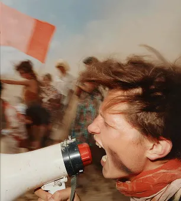
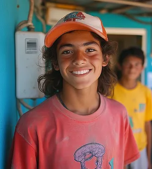

Faire un don
Événements de collecte de fonds
Organiser des événements de collecte de fonds percutants qui font une vraie différence.
Impact de votre don
Ensemble, nous améliorons les abris et répondons aux besoins vitaux des communautés.

Soutien aux résidents
Fournir des ressources de soutien essentielles aux personnes et familles dans le besoin.

Programme éducatif
Autonomiser les communautés grâce à des ateliers et des actions de sensibilisation.